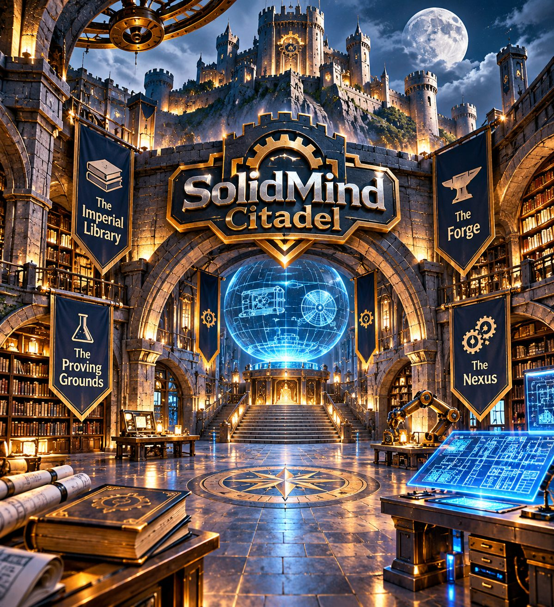

SolidMind Citadel
Envision a Brighter Tomorrow.
EnvisionEngineerCreate
Choose a hall
Every idea starts in the Library, gets tested in the Proving Grounds, and is built in the Forge.
-
The Imperial Library
Learn how things work. Stories, puzzles and lessons that start every idea.
Gates open soon -
The Proving Grounds
Test what you know. Challenges that show what works, and why.
Gates open soon -
The Forge
Build something real. Games and projects you make work yourself.
Gates open soon -
The Nexus
Where it all connects. Circuits, controllers and automation.
Gates open soon